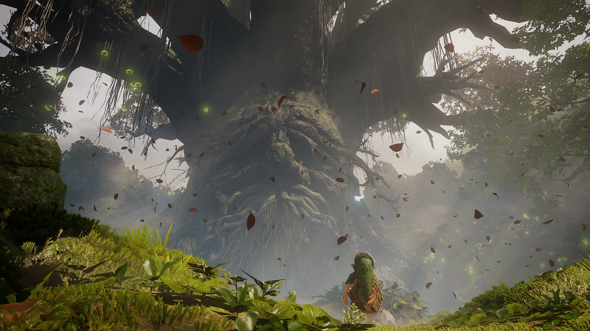

Gaming · 09 Nov 2026
Zelda: Ocarina of Time and WoW: Forever Are the Good Kind of Remakes

Nintendo and Blizzard's new versions of The Legend of Zelda: OoT and World of Warcraft are different from other remakes
Multiple independent publishers are reporting on the same development: Zelda: Ocarina of Time and WoW: Forever Are the Good Kind of Remakes.
The available reports place the development in the Gaming category. The accounts were compared for agreement on the central event rather than simply shared names or broad topics.
One of the available reports describes the development this way: Nintendo and Blizzard's new versions of The Legend of Zelda: OoT and World of Warcraft are different from other remakes
Readers should consult the linked source reports for additional context, updates and details that may change as the story develops.
Sources
This article was produced by the C. O. Eric AI Newsroom from the cited sources. It is published only after automated evidence and safety checks.